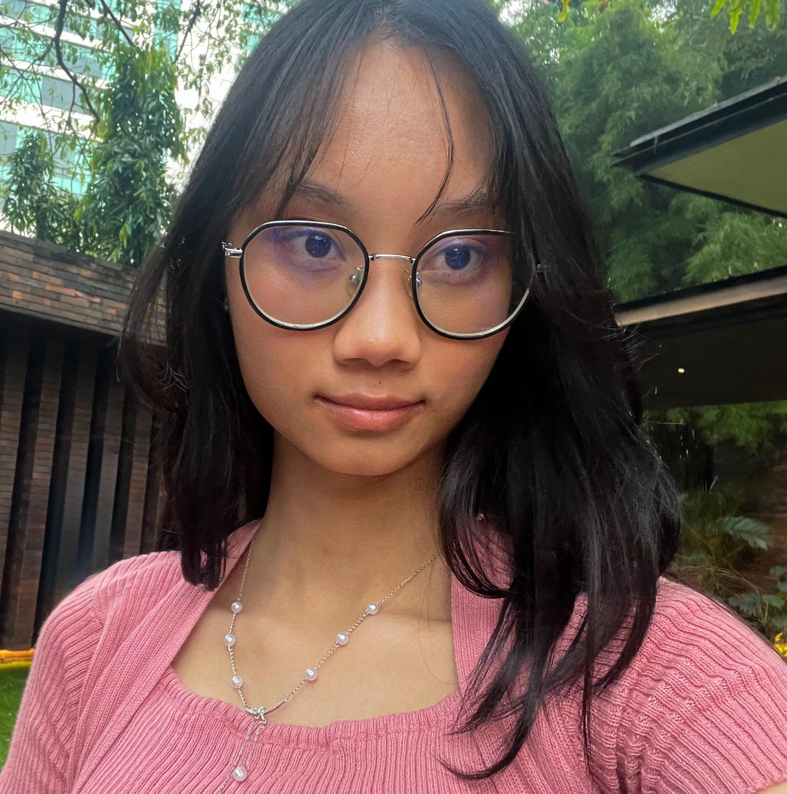
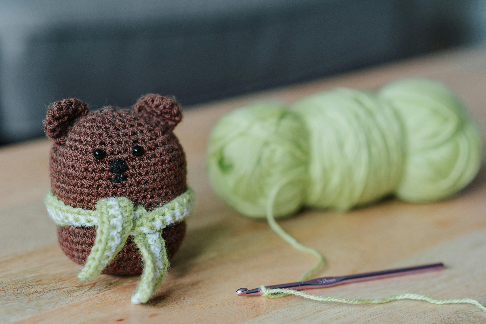

About Me
I was born in Bekasi, Indonesia, the country between the Asia and Australia continents. One of our most famous landmarks is probably the Borobudur Temple. It's the largest Buddhist temple in the world.
I am currently studying in UTS as a Diploma of IT student. Outside of my study, I enjoy reading, doom scrolling, and sleeping.
The Borobudur Temple in Indonesia
UTS Building
Fun Facts
One of my favorite fun facts about myself is that my favorite color is purple—even though almost nothing I own is actually purple. Somehow, I've ended up surrounded by blue items instead: most of my stationery, my water bottle, and my bag charm. And when it comes to clothes, black completely dominates my wardrobe. It's not even intentional; black just feels effortless, stylish, and safe for any occasion. Meanwhile, purple remains this color I rarely use in real life.
Another fun fact is that I have a habit of remembering oddly specific details about places I've been, even if I forget everything else about the day. I can recall the exact layout of a café I visited once two years ago or the color of the tiles in a random grocery store overseas—yet I'll completely forget what I ordered or why I was even there. It's like my brain collects background scenery as souvenirs. This quirk ends up being surprisingly useful: I'm almost never lost, I can retrace my steps purely by visual memory, and I often notice small design details that other people overlook. It also means that traveling feels especially magical, because every place leaves behind a tiny architectural snapshot in my mind.
I love online video. I've been obsessed with it since day one.
Skills

One of the most useful skills I've developed over the years is my ability to code in several programming languages, including Python, Java, and JavaScript. Along the way, I picked up some experience in GUI application development and web development, experimenting with small personal projects just to see what I could make. These skills have become tools I can rely on whenever I need to automate a task, build something functional, or simply create an idea from scratch.

On a completely different side of the spectrum, I also learned how to solve a Rubik's Cube—something I picked up in grade school simply because I had nothing better to do during breaks. It started as a random hobby, but it unexpectedly taught me patience, pattern recognition, and perseverance. I'm not as good at solving it as I used to, but some of the muscle memory still stays with me. Even though it's not a life-changing skill, it's a fun party trick.

One skill I really want to learn is crocheting. There's something charming about being able to turn a simple ball of yarn into something cute, useful, or meaningful. I've seen people make plushies, hats, coasters, and even full sweaters, and it feels like a craft that blends creativity with relaxation. Plus, it solves a long-standing personal problem: birthday gifts. If I learn to crochet properly, I can make personalized handmade presents instead of stressing over what to buy every year. It's a practical skill, but it also feels like a way to express care, personality, and effort in a way store-bought items can't.

Another skill I want to pursue is cooking—real cooking, not just following recipes line-by-line and hoping for the best. Right now, I can follow instructions pretty well and improvise a little, but I want to reach the level where I can open the fridge, see a few random ingredients, and confidently create a good meal. To me, that's the difference between “knowing how to cook” and truly understanding food. Being able to adjust flavours, balance textures, and create dishes from instinct feels like both a valuable life skill and a creative outlet. I want cooking to become something I'm genuinely skilled at, not just something I manage to do.